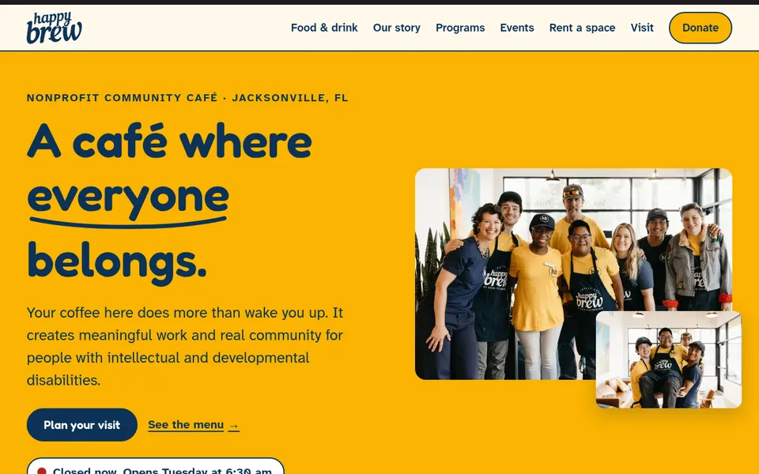
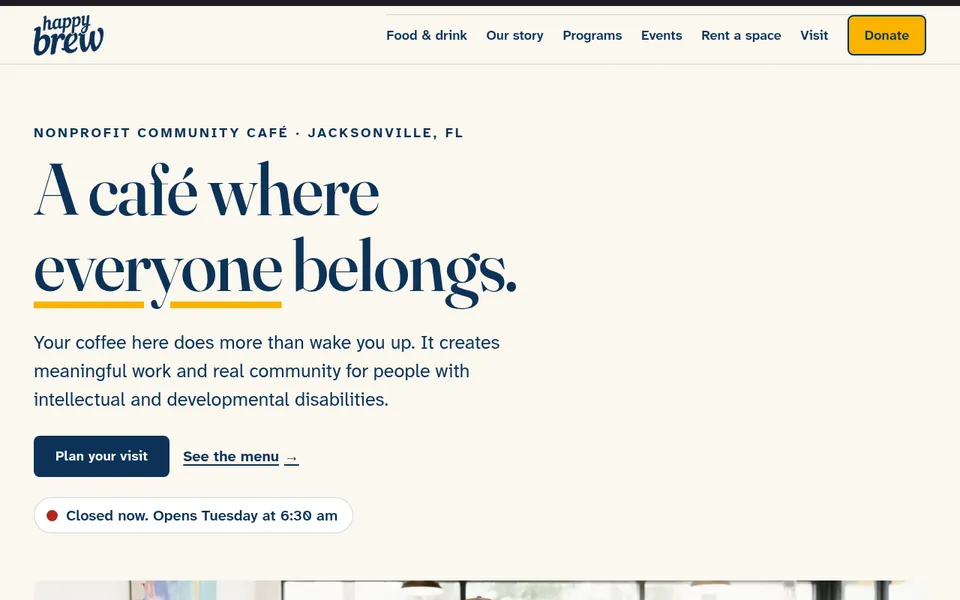
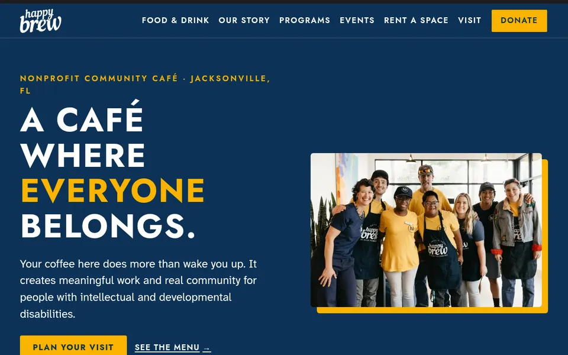

Option A: Refined current
What is live now, with restraint: fewer outlines, curves and tilts, the real script logo, quieter secondary type.
Same words, same photos, three different visual languages. Each option has a home page and the menu page so you can see how it holds up on a dense page. Look at them on a phone as well as a computer.
Direction chosen: the design of option C with the typeface of option B. The main preview now uses it on every page. These three options are kept here for comparison.

What is live now, with restraint: fewer outlines, curves and tilts, the real script logo, quieter secondary type.

Large, straight photographs do the work. Cream and navy lead, yellow is an accent, headings are a warm serif.

Navy-led like the café’s own menu boards and aprons: white script logo, capital-letter headings, yellow highlights.

Option C’s design set in option B’s type: navy and yellow with the white script logo, serif headings in ordinary sentence case.